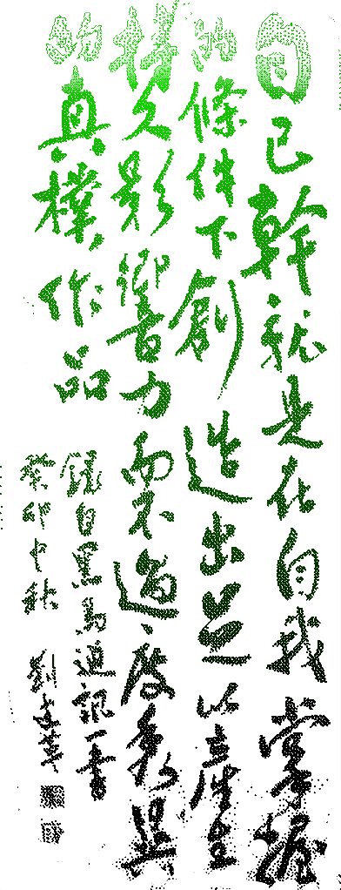
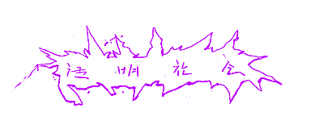
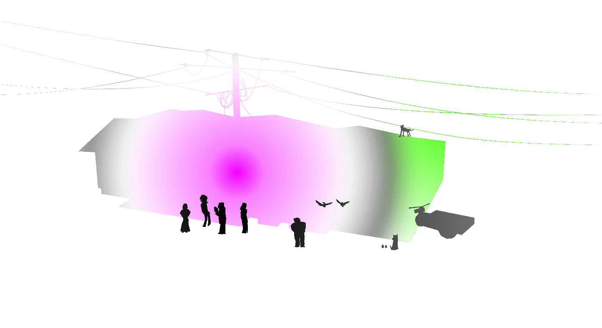
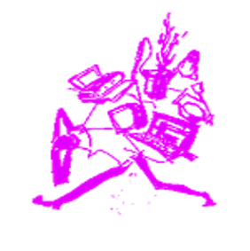
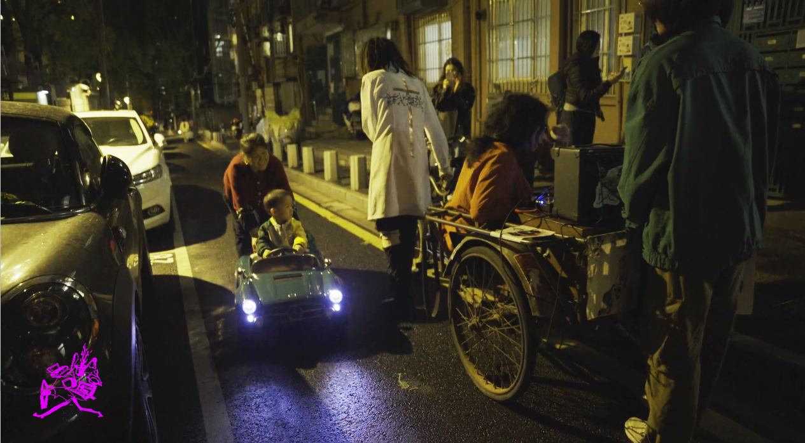

透明社会是一个位于南京的第三空间，我们关注技术与青年社会，不要放弃你的想象力！ Transparent Society is a third space located in Nanjing. We focus on technology and youth society—don't give up your imagination!

！纪录片上线！ | 世界是个大养老院 | 透明社会的痛痛三轮车音乐会之万圣节大冒险 | 2025.10.30
透明社会是一个位于南京的第三空间，坐落在南京政治文化中心——鼓楼-云南路一带。它是一间约10平方米的长方形平房，估计已有70多年历史。房屋为木梁结构，棚顶。室内有一张长桌和九把椅子，最多可容纳15人。没有卫生间、卧室或厨房；本质上就是一个带衣柜和镜子的卧室。（空调是空间建成六个月后由房东安装的）。前租客是三个在南京做停车管理工作的兄弟。他们住在房间里，抽烟，用电磁炉做饭。朝北的窗户面向一个现代住宅小区，最初是被封死的；前租客在墙上写了“神爱世人”。 房东是一位79岁的江苏滁州老人，独居。他患有哮喘和糖尿病；他的妻子在空间建成前六个月去世了。房东有一条狗（名叫“宝宝”）和一只八哥（名叫“八哥”）。在空间建立的一年内，他又收养了两只未命名的八哥、两条狗（其中一条我们命名为维特根斯坦）和一只猫（他给她取名喵，我们叫她鲍德里亚）。房东的房间就在透明社会隔壁。那是一套两居室公寓，一间用作厨房和餐厅，另一间用作客厅。客厅里还隔出了一块区域放马桶。房东床的对面是一张治疗床，以前是他妻子的。狗（宝宝）通常被拴在两张床之间的过道上。食物和电视放在房东床上，房间其余部分堆满了各种可回收物、工具和装着不明物品的塑料袋。 透明社会的发现要归功于一位经常出入该地区的废品回收者。在得知我们需要一间平房后，他开着三轮车一路把我们带到了透明社会现在的位置。起初房东要价1000元/月，我们砍到了800元/月，按季度支付（电费我们付，水费房东付）。 房东是一位老先生，独自完成了空间的初步设计和布置（包括做了一张用于讨论的桌子、拆掉卧室的床架等）。我们后来添加了书架、显示器和其他设施。 透明社会最初的目标是创建一个由年轻人（尤其是学生）自主运营的第三空间，旨在为被忽视或从未被提及的问题提供一个讨论和实践的空间。 透明社会在2026年4月正式结业。
Transparent Society is a third space located in Nanjing, situated in the Gulou-Yunnan Road area, the political and cultural center of Nanjing. It is a rectangular bungalow of about 10 square meters, estimated to be over 70 years old. The house has a wooden beam structure with a shed roof. Inside, there is a long table with nine chairs, accommodating up to 15 people. There is no bathroom, bedroom, or kitchen; it is essentially just a bedroom with a wardrobe and mirror. (The air conditioning was installed by the landlord six months after the space was completed.) The previous tenants were three brothers who worked in parking management in Nanjing. They stayed in the room, smoked, and cooked with an induction cooker. The north-facing window, facing a modern residential complex, was initially sealed off; the previous tenants wrote "God loves the world" on the wall. The landlord is a 79-year-old man from Chuzhou, Jiangsu, living alone. He suffers from asthma and diabetes; his wife passed away six months before the space's completion. The landlord has a dog (named "Baby") and a myna (named "Myna"). Within a year of the space's establishment, he also adopted two unnamed mynah birds, two dogs (one of which we named Wittgenstein), and a cat (he named Miao, and we named her Baudrillard). The landlord's room was right next to Transparent Society. It was a two-bedroom apartment, one room serving as the kitchen and dining room, and the other as the living room. A partitioned area was also carved out of the living room to house a toilet. Opposite the landlord's bed was a therapy bed that had previously belonged to his wife. The dog (Baby) was usually tied up in the aisle between the two beds. Food and a television were placed on the landlord's bed, and the rest of the room was filled with various recyclables, tools, and plastic bags of unknown contents. The discovery of Transparent Society was thanks to a scrap collector who frequented the area. After learning of our need for a bungalow, he drove us all the way to the current location of Transparent Society on his tricycle. Initially, the landlord asked for 1000 yuan/month, which we negotiated down to 800 yuan/month, payable quarterly (electricity was paid by us, water by the landlord). The landlord, an elderly gentleman, single-handedly completed the initial design and setup of the space (including making a table for discussions, removing bed frames from the bedrooms, etc.). We later added bookshelves, monitors, and other amenities. The initial goal of Transparent Society was to create a third space autonomously run by young people (especially students), aiming to provide a space for discussion and practice on neglected or never-before-mentioned issues. Transparent Society officially closed in April 2026.
透明社会的空间设计和布置由房东独自完成，后来我们添加了书架、显示器和其他设施。透明社会最初的目标是创建一个由年轻人（尤其是学生）自主运营的第三空间，旨在为被忽视或从未被提及的问题提供一个讨论和实践的空间。透明社会在2026年4月正式结业。